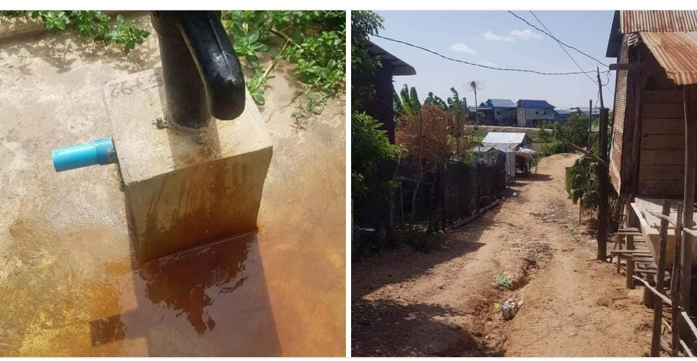

Een greep uit onze projectenDoneer nu
Een "Utrechtse" waterpomp in Run Ta EkHet begon allemaal met een appje van een lieve vriendin. De verhalen over onze projecten en de impact ervan hadden indruk op haar gemaakt. En van het een kwam het ander: voor haar aankomende ronde verjaardag - 40 werd ze - besloot ze donaties te vragen om het eerstvolgende project te ondersteunen. Fantastisch!En wat kwam het mooie bedrag goed van pas. Er kon een waterpomp worden gerealiseerd in het Cambodjaanse dorpje Run Ta Ek, waar honderden gezinnen die noodgedwongen hun huizen moesten verlaten rondom het tempelgebied van Angkor waren gevestigd. Voor hen geen kilometerslange tochten meer voor een emmer water, geen vervuild water uit open bronnen – maar schoon, veilig drinkwater, gewoon in het dorp. 
Schoon water voor het mooie Phnom TbengAls we schrijnende verhalen horen van buiten Siem Reap, zetten we ons ook daar graag in. Wie zoekt op Phnom Tbeng komt al snel uit bij de indrukwekkende pagode die populair is bij toeristen. Maar wie een paar kilometer verder kijkt dan de gebaande paden, ontdekt een heel andere werkelijkheid. In de regio rond Phnom Tbeng, in de Cambodjaanse provincie Preah Vihear, leeft een groot deel van de bevolking in armoede. Veel gezinnen zijn afhankelijk van landbouw en het verzamelen van bosproducten om rond te komen. Toen onze lokale gids Sopheak ons vroeg om hulp bij het aanleggen van twee waterputten voor deze gemeenschap, hoefden we daar geen moment over na te denken. Er zijn twee waterputten gerealiseerd om de lokale bevolking te bedienen.
Fietsen in Chong SpeanStel je voor: 50 kinderen die niets liever willen dan onderwijs volgen. Maar de afstand naar de dichtbijzijnde school is te groot om te lopen. Daar bedachten we iets op: 25 deelfietsen, waarmee deze kinderen een dagdeel naar school konden. Wat waren ze blij!
Noodhulp in Phoum ThmeyOok Phoum Thmey hoort bij de armste gemeenschappen van Cambodja. Wanneer er dan een ramp gebeurt en iemand zijn huis onbewoonbaar wordt, zijn er gewoon geen middelen voor reperatie. Het dorpshoofd maakte contact met onze Sopheak. Het hele dorp had een grote wens: dat het huis van deze familie, die al veel tegenslag in haar leven had gehad, zou worden gereperaard. Dan helpen we natuurlijk graag.
Waterfilters in OrumeasIn het onherbergzame Orumeas was er ook een tekort aan water. Hier werd gekozen voor de verstrekking van waterfilters, het water uit de naburige beek. De waterfilters werden beschikbaar gesteld op centrale plekken in het dorp en bij de school.
Scholen voor scholenWat is er mooier dan wanneer een Nederlandse school een duurzaam project voor een Cambodjaanse school financieert. De Barbaraschool in Bunnik haalde met een loterij een mooi bedrag binnen voor houten schoolbankjes voor een school in Chong Spean. |